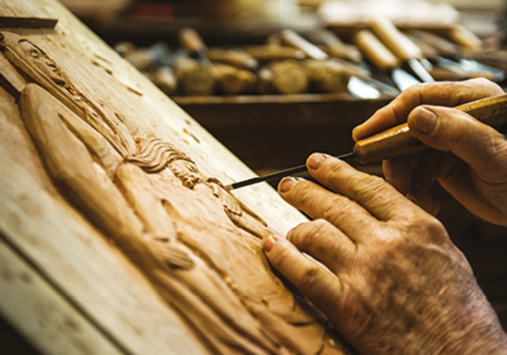

A arte indígena brasileira ainda é pouco conhecida em sua complexidade e diversidade. Sua variedade é proporcional ao número original de povos indígenas e suas particularidades. Atualmente, há apenas algumas centenas desses povos, uma parcela ínfima se comparada aos milhões de pessoas que viviam aqui antes do processo de colonização. A diversidade cultural desses povos está expressa em seus rituais, costumes e outras manifestações culturais, como a dança, a música, os rituais performáticos, a pintura corporal, o trançado e a cestaria, a arte plumária, a cerâmica, entre outros. A diversidade e a influência dessas culturas também estão presentes nas produções artísticas populares e no artesanato.
- O que você sabe da cultura dos povos indígenas? Como você teve acesso a essas informações?
- Você já viu algum objeto sendo produzido de forma artesanal? Qual?
- Em sua opinião, todo objeto produzido artesanalmente é um tipo de arte ou artesanato? Por quê?
Neste capítulo, serão abordadas as habilidades EM13LGG601, EM13LGG602, EM13LGG603, e EM13LGG604.
Oleiro em seu ofício.
artisteer/iStockphoto.com
Escultor talhando madeira.
Global_Pics/iStockphoto.com
- Quais são as semelhanças entre as duas imagens? Explique.
- Quais são as diferenças entre elas? Explique.
- Em sua opinião, os artefatos criados nas imagens acima são artesanatos ou obras de arte? Por quê?
Arte indígena, artesanato e arte popular: expressões do povo brasileiro
A arte indígena, o artesanato e a arte popular se influenciaram mutuamente e se transformaram ao longo do tempo devido às interações sociais e culturais. Sabe-se que o ser humano já produzia objetos artesanais no período Paleolítico (até 10 000 a.C.), como perfuradores, pontas, raspadeiras, agulhas com orifício etc. A produção desses objetos está intimamente ligada à transformação do próprio objeto, orientada por sua necessidade e por certo caráter estético. No período Neolítico (10000 a.C. a 3000 a.C.), são desenvolvidas novas técnicas, como a cerâmica e a tecelagem para o armazenamento de alimentos e a fabricação de roupas e outros utensílios. Pesquisadores identificaram que os povos ancestrais dos indígenas que viviam no território nacional produziram cerâmicas ricamente decoradas na área do atual Parque Nacional da Serra da Capivara, no sudeste do Piauí. Algumas dessas cerâmicas datam de até 8960 a.C.

Pinturas rupestres no Parque Nacional da Serra da Capivara, no estado do Piauí.
Global_Pics/iStockphoto.com
Durante os séculos seguintes, o artesanato foi sendo aperfeiçoado pelos grupos humanos e se tornou cada vez mais elaborado esteticamente. Embora o resultado apresentasse maior complexidade, o processo de execução permaneceu predominantemente manual, ou, no máximo, contou com o uso de ferramentas simples, como pincel, martelo, agulha e tear. Esse modo de elaboração se manteve até o final do século XVIII, quando se iniciou o processo de industrialização. Na cultura popular, os elementos estéticos foram incorporados às formas e às narrativas do cotidiano presentes nos objetos utilitários. Esses elementos ganharam espaço de acordo com a necessidade de autoexpressão daqueles povos. Assim, aos poucos, surgiram peças, como esculturas, vasos, pinturas, trançados, entre outras, que apresent vam valor artístico e não eram mais apenas utilitárias
Artesanato é um produto feito à mão, sem recursos ou técnicas industriais; na produção de um objeto artesanal, faz-se uso de conhecimento de técnicas e procedimentos que na cultura popular, é passado de uma geração para a outra e modificado conforme novos saberes são adquiridos e procedimentos são inventados. Estética, por sua vez, diz respeito à beleza sensível, sobretudo nos fenômenos artísticos. De modo mais amplo, ela se refere tanto à captação da beleza (na arte, na natureza, no artesanato) quanto ao estudo do que faz um objeto artificial ou natural despertar sentimentos de sublimidade nas pessoas.
Nações indígenas
Conforme visto anteriormente, não é possível dissociar a arte da história e da cultura dos povos que a produzem. Os povos indígenas que já habitavam o continente à época da chegada dos colonizadores têm forte influência em todas as regiões do Brasil, tanto na cultura e arte populares quanto no artesanato. Devemos nos lembrar, no entanto, que, ao longo da história, esses povos foram vítimas de genocídio e etnocídio, com consequências nefastas que perduram até hoje. A partir dos séculos finais da Idade Média, a Europa foi marcada pelas grandes expedições marítimas, que buscavam outros continentes e suas riquezas. Esse período é conhecido como “Era dos Descobrimentos”. Nesse processo, a visão eurocêntrica e colonizadora desconsiderou, ao aportar em novas terras, a história e a cultura dos diversos povos que foram encontrados, que já apresentavam distintos graus de conhecimento tecnológico, como os astecas (México), os incas (Peru) e os povos indígenas brasileiros, entre eles os Guarani. Em vista do processo de colonização e negação dos valores culturais indígenas, a riqueza cultural desses povos é, ainda hoje, praticamente ignorada. Há pouco conhecimento da cultura indígena e, na maioria dos casos, resume-se ao uso da mandioca na culinária, aos nomes de objetos e cidades, a algumas sonoridades e danças.

DEBRET, Jean-Baptiste. Soldados da província de Curitiba escoltando presos nativos (1830).
Fundação Biblioteca Nacional, Rio de Janeiro
Esses povos continuam a ser excluídos, embora estudos, como os do médico-geneticista brasileiro Sérgio Pena, apontem que aproximadamente um terço da população brasileira tenha ascendência indígena. A história da colonização sob o ponto de vista indígena é pouco comentada, ou abordada superficialmente, fortalecendo a desinformação sobre os acontecimentos por vezes violentos que envolveram o processo de colonização e miscigenação. Esses fatores estão diretamente ligados à história e à cultura dos povos indígenas após a colonização, interferindo no modo de viver na atualidade e, consequentemente, na maneira de fazer arte.
... segundo o Instituto Brasileiro de Geografia e Estatística (IBGE), as estimativas que permitem compreender a história indígena como “despovoamento” são expressas por meio de pesquisa comparativa entre o número da população das terras indígenas na atualidade e o da existente no século XVI, quando se iniciou o processo de colonização. Dessa maneira, dados demográficos da população indígena no Brasil revelam que, naquela época, havia cerca de cinco milhões de habitantes em nosso território. Atualmente há cerca de 820 mil pessoas. Embora o Censo de 2010 mostre uma recuperação do crescimento da população indígena, muitos povos foram totalmente dizimados, e suas culturas, extintas. Vale destacar que diversos desses grupos apresentavam população original estimada em mais de 30 mil pessoas.
Ainda hoje, não há um entendimento claro do que é ser indígena por parte da população não indígena. Vítima de preconceitos, o indígena é retratado como alguém parado no tempo, sem acesso a novas tecnologias, moradia, saúde, terra e meio de transporte. No entanto, a participação indígena nos importantes momentos políticos brasileiros contradiz essa construção, como se pode observar na imagem a seguir.

Lideranças indígenas na Câmara dos Deputados, em Brasília, 2015.
Sergio LIMA/AFP
O antropólogo Eduardo Viveiros de Castro explica que índio é qualquer membro de uma comunidade indígena que seja reconhecido por ela como tal. Esse conceito abarca em torno de 820 mil pessoas em território nacional, sem falar em outros milhares espalhados pelo restante da América. Ele esclarece que não existe índio brasileiro como identidade única e genérica. São mais de 300 etnias indígenas brasileiras, entre as quais: Yanomami, Kayapó, Bororo, Xavante, Tremembé, Pataxó, Tupi, Juruna, Munduruku, Aruá, Macuxi, Caingangue, Araweté, Anambé, Tabajara, Carijó, Apinajé, Potiguar, Caeté, Tupinambá e Terena. Cada uma dessas etnias tem características próprias em sua história, língua, crença, aparência física, forma de organização social, hábitos, técnicas, valores e formas de contato com a sociedade não indígena. O que dizer então da riqueza e variedade de objetos e manifestações artísticas a serem conhecidas sobre essas etnias?
O último Kuarup branco.
Direção: Bhig Villas Bôas. 2008. Classificação indicava: livre. Dirigido por Bhig Villas Bôas, o documentário reconstrói os primeiros contatos dos indígenas com o não índio, a partir de depoimentos de representantes de várias etnias que atualmente vivem no Parque Nacional do Xingu. A obra mostra ainda como foi o processo de abandono de suas aldeias e a transferência para o Xingu, onde os indígenas foram obrigados a viver. Hoje, no parque, vivem 14 diferentes etnias indígenas, um testemunho vivo do Brasil pré-descobrimento. Retrata, ainda, a importância de Orlando Villas Bôas na defesa dos interesses indígenas e as muitas vozes sobre o tema.
Outro elemento importante para a compreensão da cultura indígena é o conceito de arte. Para os indígenas, o conceito de arte é uma criação dos povos ocidentais. Aliás, a palavra “arte” é inexistente na maioria das línguas nativas. Dessa maneira, quando um indígena cria algo, como um vaso de cerâmica, ou pinta o corpo para um ritual, ele o faz sem intenção artística, no sentido de arte como criação para ser apreciada. Assim, são os não indígenas que chamam as expressões culturais dos indígenas de arte. No entanto, apesar dessa diferença crucial, objetos e criações indígenas apresentam valor estético e simbólico, que colaboram substancialmente para a definição da identidade e da cultura do povo brasileiro. Desta maneira, as artes indígenas brasileiras, tomadas aqui como o conjunto das criações (artes visuais, músicas, danças e representações) de todas as etnias indígenas do país, são milenares – por conseguinte, existem desde antes da colonização do Brasil – e de grande importância para a nossa cultura e a nossa história, sendo essenciais para a compreensão de nossa identidade.
Máscara Tikuna, 2015. Parte do acervo de etnologia indígena do Museu Nacional/UFRJ, Rio de Janeiro, Brasil. Fora de seu contexto, a máscara perde seu valor social para os indígenas e se torna um objeto de curiosidade de apreciação para os não indígenas.
Dornicke (CC BY-SA 4.0)/Wikimedia Commons/Museu Nacional, Rio de Janeiro
Arte indígena: cores, formas, suportes e materiais
É preciso esclarecer que, apesar de alguns artefatos serem produzidos pelos indígenas com o intuito de atender ao comércio turístico, esses produtos são geralmente mais simples do que aqueles utilizados em rituais ou no cotidiano do grupo. Por outro lado, as manifestações desses povos apresentadas a seguir são um pequeno recorte de um universo rico e diversificado. As cerâmicas indígenas são muito valorizadas historicamente, em especial a Marajoara, por sua importância e riqueza culturais. Essa expressão artística pode ser encontrada na forma de bonecas, vasos, pratos, panelas e outros objetos decorativos.
Muito valorizadas pelo turismo cultural, as bonecas Ritxòkò constituem importante fonte de renda para as comunidades Karajá, cuja população é de cerca de 3,2 mil pessoas, com ramificações no estado de Mato Grosso. A boneca foi reconhecida como Patrimônio Imaterial pelo Instituto do Patrimônio Histórico e Artístico Nacional (Iphan), em 2012.
A boneca Ritxòkò, por exemplo, simboliza a identidade cultural do povo Karajá. Ela representa cenas do cotidiano e dos ciclos rituais, por isso é considerada educativa para as crianças. É de cerâmica e pintada com grafismos que representam as formas humanas, a pintura corporal, os adereços e a fauna das margens do Rio Araguaia, nos estados de Goiás e Tocantins, onde se localizam as principais aldeias Karajá.
Ritxòkò, boneca Karajá. Cerâmica, 10,5 cm × 9,0 cm. Museu do Índio. Rio de Janeiro.
Museu do Índio, Rio de Janeiro
O trançado e a cestaria – cestas, balaios, esteiras indígenas –, bem como a arte em madeira, são amplamente comercializados. Em madeira, são produzidos bancos e estatuetas com formas de animais, máscaras, carrancas e ornamentos em geral. Essa produção destina-se ao uso cotidiano – incluindo os rituais – e à comercialização, o que gera meios de subsistência. Nem todos os povos indígenas fazem objetos em cerâmica, em madeira ou cestaria. Cada etnia tem um tipo de expressão e faz uso de determinado material. As matérias-primas são retiradas da natureza e comuns a todas as comunidades indígenas, como argila, madeira, cipós, tintas extraídas de resinas etc.
Pirakumã Yawalapiti. Banco quadrúpede morfo representando macaco, 1980. Povo Yawalapiti, Mato Grosso. Museu do Índio, Rio de Janeiro.
Museu do Índio, Rio de Janeiro
Entre as manifestações artísticas indígenas, destaca-se a arte plumária pela riqueza das cores e formas. Tal arte consiste na confecção de flechas, cocares e outros adornos e é realizada com penas e plumas de aves, geralmente tingidas. Elas representam marcações sociais, como sexo, idade, filiação e posição social. Os povos indígenas que realizam essa arte são, principalmente, os Xavante, Waurá, Juruna, Kayapó, Tukano, Urubu-Kaapor, Asurini, Karajá. Outra expressão dos indígenas brasileiros é a pintura corporal, conhecida mundialmente pela complexidade e abstração das formas. Tais formas, que também estão presentes na cestaria e na cerâmica, são chamadas de grafismo.
Indígena da etnia Tuyuka da Aldeia Utapinopona com pintura corporal, colares e brincos de penas.
Grafismo indígena, Lux Vidal. São Paulo: Studio Nobel, 1992. A obra traz imagens e desenhos que mostram a organização e a composição dos traçados em suportes como pedra, cerâmica, entrecasca, papel e, com maior frequência, o corpo humano. O livro apresenta os aspectos sociais do grafismo nas sociedades indígenas e contribui, dessa forma, para a preservação da cultura indígena e da diversidade étnica.
Mãos à obra
Analise os grafismos indígenas deste capítulo e também pesquise outros na internet. Inspire-se neles e crie um padrão gráfico para ser pintado em seu corpo. Verifique a medida de seu antebraço e punho e, com essa medida, desenhe um padrão gráfico com as cores desejadas em uma folha A4. Em duplas, pinte o padrão geométrico escolhido pelo colega no antebraço dele. Use tinta guache, pincéis chato e fino. Depois, fotografe as imagens e promova com os colegas uma exposição.
Arte popular e artesanato
O trabalho artesanal é a forma mais antiga de produção de artefatos. Na Idade Média, na Europa Ocidental, a partir do século XII, nas cidades maiores, o trabalho dos artesãos passou a ser organizado por meio das corporações de ofício. Essas corporações tinham como objetivo o desenvolvimento de atividades como a de padeiro, ferreiro, alfaiate e carpinteiro. Essas corporações uniam o trabalho, a criatividade e a organização e respeitavam uma hierarquia. Nelas havia o mestre (dono da oficin, os oficiais (trabalhadores contratados pelo mestr e os aprendizes (jovens que queriam aprender um ofício). Nessa época, a arte era considerada apenas uma atividade manual e funcionava como em outras corporações de ofício. Esse tipo de organização durou até o século XVIII, e a produção artesanal foi substituída gradativamente pela produção mecanizada e em série. Apesar de a fabricação de produtos industrializados ter se espalhado pelo mundo, o artesanato sobrevive em pequenas comunidades, nos grupos com saberes tradicionais, em centros turísticos e, hoje, com a discussão sobre ecologia e sustentabilidade, vem sendo valorizado por grupos específicos nos grandes centros urbanos. Os objetos de produções artesanais têm, em sua maioria, fins utilitários e funcionais, como vasilhames para armazenar água, panelas de barro, roupas, entre outros. Mas também existem objetos criados para apreciação, como esculturas, carrancas, pinturas, que transmitem características únicas de um povo ou do artesão. Esses objetos, que revelam o modo de ser, de fazer e de viver de um povo, são chamados de arte popular. É importante diferenciar o artesanato ou a arte popular dos trabalhos manuais, que, apesar de serem semelhantes ao artesanato, utilizam moldes e padrões predefinidos, sem que haja um processo de criação. O produto artesanal se diferencia do industrializado pela fragmentação das etapas de produção. Na confecção do produto artesanal, o artesão pode utilizar alguns equipamentos ou ferramentas, mas a realização é essencialmente manual. Por tradição, o artesão trabalha sozinho, ou com a família, na própria casa. Com outros artesãos, reúne-se em oficinas ou espaços comunitários. Ele realiza todas as etapas da produção, do preparo dos materiais em estado bruto ao acabamento dos objetos. Na fabricação de bolsa de couro artesanal, por exemplo, o artesão cria o modelo, prepara o couro, corta o modelo, confecciona as alças, costura e cola, até o produto ficar pronto. Com pouca tecnologia, ele cria e executa todas as etapas da produção.
Produção artesanal de peça em couro.
Maksim Toome/Shutterstock.com
Na produção de uma bolsa em uma fábrica, há uma pessoa ou máquina responsável por cada parte do processo: uma pessoa cria o modelo da bolsa; outra opera a máquina que corta o couro; outra comanda o equipamento que fura o local dos fechos etc. Muitas vezes, as máquinas não precisam de um operador e realizam o trabalho automaticamente.
Por dentro da arte
Cada região do Brasil possui uma grande variedade de manifestações artísticas populares, entre elas folguedos, danças e músicas. As músicas e danças populares têm várias origens, como portuguesa, africana, indígena, alemã e italiana. O Sul do país ainda mantém forte influência dos povos que colonizaram a região, de modo que as tradições populares trazidas pelos imigrantes ainda se mantêm vivas, fazendo referência mais explícita às tradições de seus países de origem. Em outras regiões, as tradições se incorporaram à cultura brasileira de tal forma que suas origens não têm mais limites definidos de forma tão evidente.
Outras manifestações populares • Que outras manifestações da arte popular brasileira você conhece? Comente. • Você já observou, no lugar onde vive, manifestações da cultura popular e do artesanato? Cite alguns exemplos. • Como as pessoas da cidade (ou da comunidad em que você vive percebem a cultura e a arte indígenas? • Como você entende agora a cultura dos povos indígenas brasileiros? Explique seu ponto de vista.
1
UFU-MG 2015 A questão da demarcação de terras indígenas tem ao longo do tempo suscitado diversos conflitos. Mais recentemente, observou-se a possibilidade de modificar os critérios de demarcação, pois, conforme seus críticos, os regulamentos vigentes possibilitariam a ação de “indígenas civilizados”, ou seja, aqueles que supostamente teriam perdido sua identidade indígena, e que agora a reivindicavam com o intuito de obter terras. No centro deste debate, encontra-se a definição do que é ser indígena, enfim, a definição dos critérios definidores de uma etnia.
Para os estudos antropológicos atuais, define-se uma etnia por meio da
- identificação da presença de traços fenotípicos comuns a uma população, atrelados ao cultivo de uma tradição cultural.
- ocupação territorial de um país específico e pela persistência de traços culturais tradicionais.
- identificação de uma concepção, partilhada por uma população, da existência de uma trajetória histórica comum que funda uma identidade.
- identificação de traços raciais comuns a uma população, aliados a elementos culturais específicos.
2
UFPB (Adapt.) Leia o texto: Surgimos da confluência, do entrechoque e do caldeamento do invasor português com índios silvícolas e campineiros e com negros africanos, uns e outros aliciados como escravos. [...] nessa confluência tem-se um novo modelo de estrutura social. Novo porque surge como uma etnia nacional, diferenciada culturalmente de suas matizes formadoras. Povo novo ainda porque é fundado num tipo renovado de escravismo e numa servidão continuada ao mercado mundial.
(RIBEIRO, 1995, p. 9).
No texto, o autor descreve a formação social do povo brasileiro. Considerando a questão indígena e as informações apresentadas, assinale as alternativas verdadeiras.
- 01. Os povos indígenas, no processo de aculturamento citado, que teve início em 1500, sofreram genocídio (extermínio físico) e etnocídio (destruição da própria cultura, passando a falar outra língua e a professar nova religião).
- 02. As transformações identificadas na cultura indígena brasileira são decorrentes da nova reestruturação do seu papel na sociedade e da delimitação de seus territórios.
- 04. Oito grupos indígenas ainda existem, no Estado da Paraíba, distribuídos entre o litoral e o sertão. São eles: Caeté, Tabajara, Paiacu, Iró, Jandiú, Ariu, Sucuru e Chacó.
- 08. Os índios Caiapó não vivem mais na sua forma original, tendo em vista suas roupas e as relações comerciais e turísticas, que constituem fontes de renda no presente e que não existiam no passado.
- 16. Os grupos indígenas da Amazônia vivem, ainda hoje, na sua formação original, sem influência da cultura ocidental; o que mudou foi a delimitação de seus territórios, definidos pelo Governo Federal.
- Soma:
3
UEPG Sobre as Artes Indígenas no Brasil, assinale o que for correto.
- 01. As histórias de contato com os não índios e as histórias de sobrevivência dos povos indígenas promoveram mudanças culturais, como por exemplo, o uso de tintas industrializadas, em função da escassez de matérias-primas.
- 02. Entre os Kaingang, originários do Sul do Brasil, as pinturas corporais presentes no Kikikoi (culto dos mortos) são de cor preta, feita com carvão misturado com mel e água. Elas diferenciam os dois subgrupos ou clãs dessa etnia.
- 04. Os adornos, utensílios de cerâmica, pinturas corporais, danças, cânticos e hábitos religiosos integram as cosmogonias indígenas, nas quais: arte, cotidiano e religião se confundem. Isso caracteriza a separação existente entre a arte e as atividades práticas do dia a dia para os povos indígenas.
- 08. As pinturas corporais são grafismos simples e ornamentais que possuem significados comuns às diversas etnias indígenas brasileiras.
- Soma:
4
Enem A evolução do processo de transformação de matérias-primas em produtos acabados ocorreu em três estágios: artesanato, manufatura e maquinofatura.
- trabalhava conforme o ritmo das máquinas e de maneira padronizada.
- trabalhava geralmente sem o uso de máquinas e de modo diferente do modelo de produção em série.
- empregavam fontes de energia abundantes para o funcionamento das máquinas.
- realizava parte da produção por cada operário, com uso de máquinas e trabalho assalariado.
- faziam interferência do processo produtivo por técnicos e gerentes com vistas a determinar o ritmo de produção.
1
UEL 2019 Analise as imagens e leia o texto a seguir.
Rosana Paulino, Bastidores 1997 – mariaseseverinas.wordpress.com
Rosana Paulino, Bastidores 1997.
Pintura facial – Kadiwéu – br.pinterest.com
Adaptado de afreaka.com.br
Olhos e bocas aparecem costurados grosseiramente como um símbolo. O segredo guardado dentro do universo doméstico: os olhos que não podem ver, a boca que não pode falar, gritar. A artista faz da trama um elemento questionador e ao mesmo tempo criador de novos sentidos, como no trabalho Bastidores, 1997.
Adaptado de afreaka.com.br
A pintura indígena é individual, única e possui diversos significados segundo as diferenciações sociais, traduzindo a dignidade do ser humano e exprimindo a sua função sociológica. Com base nas imagens, no texto e nos conhecimentos de arte indígena e da arte contemporânea brasileira de Rosana Paulino, considere as afirmativas a seguir.
- A obra Bastidores apropria-se de objetos usuais das mulheres para abordar questões que remetem à opressão, ao racismo, à feminilidade, articulando significados.
- Obras indígenas trazem, também, o corpo como suporte e base das atividades artísticas, representando a beleza, a vida e suas diferenças na forma humana.
- A arte dos Kadiwéu apresenta uma produção abstrata na pintura do corpo e do rosto com detalhes, simetria, equilíbrio e beleza.
- A produção da obra Bastidores aborda o problema da relação entre o meio ambiente e a religião e prioriza a posição da mulher na natureza e a força do pensamento místico.
Assinale a alternativa correta.
- Somente as afirmativas I e II são corretas.
- Somente as afirmativas I e IV são corretas.
- Somente as afirmativas III e IV são corretas.
- Somente as afirmativas I, II e III são corretas.
- Somente as afirmativas II, III e IV são corretas.
2 Enem 2016
Texto I Documentos do século XVI algumas vezes se referem aos habitantes indígenas como “os brasis”, ou “gente brasília” e, ocasionalmente no século XVII, o termo “brasileiro” era a eles aplicado, mas as referências ao status econômico e jurídico desses eram muito mais populares. Assim, os termos “negro da terra” e “índios” eram utilizados com mais frequência do que qualquer outro.
SCHWARTZ, S. B. Gente da terra braziliense da nação. Pensando o Brasil: a construção de um povo. In: MOTA, C. G. (Org.). Viagem incompleta: a experiência brasileira (1500-2000). São Paulo: Senac, 2000 (adaptado).
Texto II Índio é um conceito construído no processo de conquista da América pelos europeus. Desinteressados pela diversidade cultural, imbuídos de forte preconceito para com o outro, o indivíduo de outras culturas, espanhóis, portugueses, franceses e anglo-saxões terminaram por denominar da mesma forma povos tão díspares quanto os tupinambás e os astecas.
SILVA, K. V.; SILVA, M. H. Dicionário de conceitos históricos. São Paulo: Contexto, 2005.
Ao comparar os textos, as formas de designação dos grupos nativos pelos europeus, durante o período analisado, são reveladoras da:
- concepção idealizada do território, entendido como geograficamente indiferenciado.
- percepção corrente de uma ancestralidade comum às populações ameríndias.
- compreensão etnocêntrica acerca das populações dos territórios conquistados.
- transposição direta das categorias originadas no imaginário medieval.
- visão utópica configurada a partir de fantasias de riqueza.